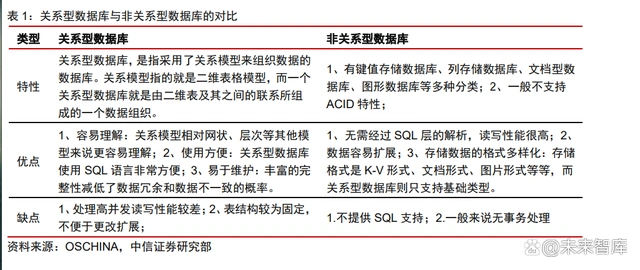
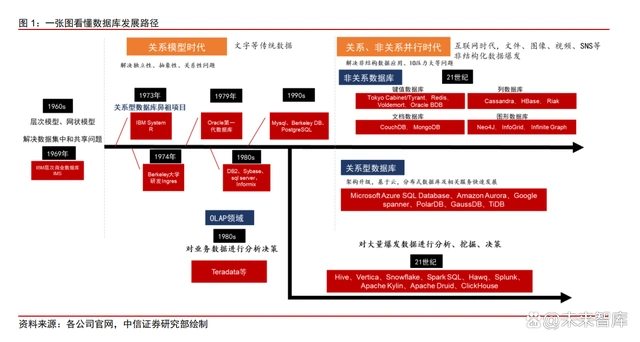
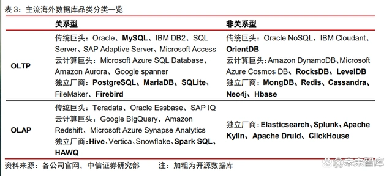
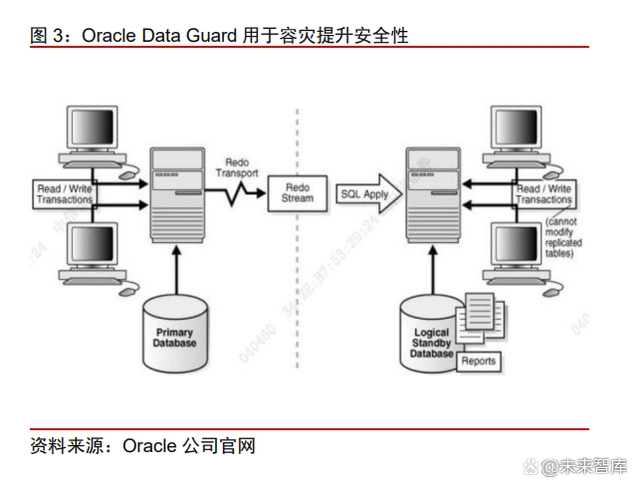
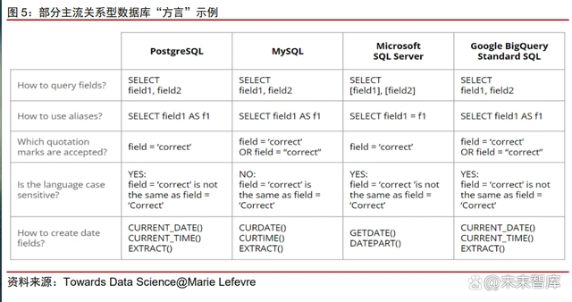

数据库行业专题研究：关键三问深度解读
本报告以市场上核心关注的三个数据库行业问题为抓手，创新性的展开对数据库行业 的讨论与分析，帮助读者重点理解当前数据库行业的核心矛盾，并梳理了对应的参与公司 与建议关注的投资机遇。具体内容如下：
1）OLTP 数据库国产厂商替代能力探究
基于数据库产业发展历史的回顾，明确关系型 OLTP 数据库是目前国产替代的主要对 象，从产品性能、编程方言、应用生态维度梳理海外巨头所具备的优势以及国产厂商面临 的挑战，从性能、生态和市场的角度分别论证数据库国产替代的能力几何。
2）OLAP 数据库的技术复盘与格局推演
我们认为 OLAP 与 OLTP 并行发展是数据库行业重要趋势，并从供需角度分析 OLAP 增长动因。系统梳理 OLAP 领域从数据仓库、数据湖到湖仓一体的技术发展演进，总结各 阶段技术架构与需求痛点。基于 OLAP 需求场景，我们认为 OLAP 数据库正在朝着决策实 时化、场景精细化、产品标准化的方向发展。
问题一：OLTP 数据库的国产替代能力如何？
核心聚焦：关系型 OLTP 数据库是国产替代的主要对象
产品分类：从需求的角度可将数据库分成以下两种——关系型数据库和非关系型数据 库、OLTP 数据库和 OLAP 数据库。
1） 按数据模型分类：关系型数据库和非关系型数据库
关系型数据库是一种典型的数据库类型，采用关系模型，常用行和列等二维的形式来 存储结构化数据，一系列的行和列被称为表，一组表组成了一个数据库。表的每一行称为 一个元祖（Tuple），代表了一组值之间的联系；每一列称为一个属性（Attribute）或字段 （Field），是对实体的具体描述，每一列的数据类型相同。关系模型凭借原子性、一致性、 隔离性和持久性的 ACID 特性，取代层次、网状模型成为当代主流数据模型。 非关系型数据库是用非关系模型，存储非结构化的如图像、音视频等类型数据的数据 库，分为列存数据库、键值数据库、文档数据库、图数据库等多种类别。随着 web2.0 的 兴起海量半结构化、非结构化数据出现，非关系型数据库应运而生。

2） 按应用类型分类：OLTP 和 OLAP
OLTP（On-Line Transaction Processing，操作型数据库，又称联机事务处理）主 要关注一段时间内的实时数据，基本特征是接收的用户数据可以立即传送到计算中心进行 处理，并在很短的时间内给出处理结果，是对用户操作快速响应的方式之一。OLTP 主要 使用关系模型，用户多为一线业务人员，支持高并发、实时快速增删查改，典型应用场景 包括金融交易、互联网电商等。 OLAP（On-Line Analysis Processing，分析型数据库，又称联机分析处理）主要 是分析长期数据的规律走势，多应用于决策。OLAP 使用的数据对象不限于关系模型，用 户多为分析师或管理层，支持对于历史数据的分析操作，典型应用场景包括风险预警、商 业分析、辅助决策等。伴随企业信息系统大量业务数据的产生，从不同类型的数据中提取出对企业决策分析有用的信息这一需求日渐显现。
发展历史：国外数据库厂商相对于国内厂商早起步 20-30 年。国内厂商中，如今占据 国内市场份额较多的达梦数据成立于 2000 年，南大通用成立于 2004 年，而国外的 IT 巨 头早在上个世纪便已经在这一领域进行研究发展，以 Oracle、IBM、微软为代表的海外 IT 巨头的相关产品于 20 世纪 80 年代末开始进入中国。先发优势带来的技术领先和客户粘性 是如今国外厂商仍然占据国内数据库市场主要份额的重要原因。

20 世纪 60-70 年代，关系模型快速发展，关系型数据库可解决数据存储的易用性、 抽象性、独立性等问题，拉开了关系型数据库软件革命的序幕。1970 年，IBM 公司的研 究员埃德加·科德在 Communications of ACM 上发表论文《A Relational Model of Data for Large Shared Data Banks》，在层次模型和网状模型的数据库产品在市场上占主要位置的时代，拉开了关系型数据库软件革命的序幕。 IBM 在 1973 年启动了 System R 项目来研究关系型数据库的实际可行性，各方关系 型模型支持者吸取该项目经验，进行关系型数据库研发。1977 年，Oracle 创始人 Larry Ellison 与 Bob Miner 和 Ed Oates 在硅谷共同创办了一家名为软件开发实验室的计算机公 司（Oracle 前身），开始进行关系型数据库的研发，同时期 Berkeley 大学也在进行关系数 据库系统 Ingres 的开发。IBM 虽然 1973 年就启动了 System R 项目来研究关系型数据库 的实际可行性，但是并没有及时推出这样的产品，因为当时 IBM 的的 IMS（著名的层次型 数据库）市场较好，公司当时认为，如果推出关系型数据库，会是对另一款产品的颠覆。 80-90 年代，大量数据库公司吸取关系模型经验，逐步推出自己的产品。1983 年，IBM 发布商业版数据库 DB2。1984 年，Sybase 公司成立，创始人之一 Bob Epstein 是 Ingres 大学版（与 System R 同时期的关系数据库模型产品）的主要设计人员。1988 年，微软推 出 SQL Server，主要适配自身 Windows 生态，这个时期，Oracle 因为客户需求已经使用 C 语言开发出适用于多个系统版本的数据库产品。90 年代，MySQL、PostgreSQL 等开源 版本数据库陆续发布。

国产替代：重点关注海外 IT 巨头先入为主的关系型 OLTP 数据库的存量市场。外部 确定因素扰动下，安全可控势在必行，数据库国产替代加速开展，以党政为代表的国产替 代先行，并不断向金融、电信等领域拓展。纵观海内外数据库行业近 70 年的发展史，我 国自上世纪 80 年代开始相关技术研发、21 世纪初开始逐步迈入成熟的商业化进程，整体 进度落后于海外巨头 20 余年，导致在传统关系型 OLTP 数据库领域海外巨头占据主要市 场份额。而后较为新兴的非关系型领域、OLAP 领域由于需求的碎片化以及云厂商和独立 厂商的角力，加上国产数据库厂商紧紧跟随行业发展的步伐，海内外新兴数据库市场呈现 出百花齐放的态势，海外厂商在新型数据库领域并不具备绝对的技术迭代优势和市场份额 优势。因此数据库国产替代首先重点关注传统的关系型 OLTP 数据库的存量市场。
替代挑战：海外巨头在产品性能、编程方言、应用生态等维度具备优势
我们认为，海外 IT 巨头在数据库领域能够经久不衰的原因主要体现在优越的产品性 能、独立的编程方言和广泛的应用生态等维度。这亦是数据库国产替代所面临的主要挑战， 是探究国产数据库能否完成替代的重要关切。
1） 技术领先，性能加持
数据库产品最重要的指标之一是性能，以海外数据库龙头 Oracle 为例，其产品在安 全性、可伸缩性和并行性、兼容性、开放性等维度具备出众优势。 安全性方面，Oracle 的安全机制得到 17 家独立安全评估机构的认可，获得最高认证 级别的 ISO 标准认证。Oracle Data Guard 是 Oracle 的高可用性数据库方案，主要功能是 数据保护、数据容灾。Oracle Data Guard 在主节点和备用节点之间通过日志同步来保证 主数据库与备用数据库之间数据的同步，实现数据库的快速切换和故障恢复，最大程度保 护数据库的安全。 可伸缩性和并行性方面，Oracle 的服务器通过使一组结点共享同一簇中的工作来扩展， 提供高可用性和高伸缩性的解决方案；Oracle 产品拥有 RAC 等数据库领域的硬核技术。 Oracle RAC (Real Application Clusters)是 Oracle 的一项支持网格计算环境的关于应用集 群的核心技术。在一个应用环境中，让多个服务器来管理同一个数据库，分散了每一台服 务器的工作量。Oracle RAC 的技术大幅提升架构的可用性、性能、扩展性，即使某些实 例宕机，也能维持系统正常工作；提高集群的事务处理能力，使得多个实例能够并发工作； 能通过增加节点提高数据库的性能。

兼容性方面，Oracle Database 可以在 Windows、Unix、DOS 等多个系统上工作， 没有 SQL Server 只能在 Windows 系统上运行的局限性，同时支持包括 TCP/IP、DECnet 在内的多种协议，可以与多种通讯网络连接。 开放性方面，Oracle 的底层使用 C 语言开发而成，随着不断发展在开发中也加入 Java 语言和技术标准，并支持绝大多数编程语言，相比之下 SAP 等竞争对手均只支持几种编 程语言，与其他技术与平台的兼容度低于 Oracle。
2） 独立编程方言，提升用户粘性
SQL 作为关系型数据库的标准语言，具备移植性强、简洁易用等优势。SQL 全称 Structured Query Language，是用于定义、查询、修改和管理关系型数据库的结构化查询语言。1970 年 IBM 公司研究员埃德加·科德在其发表的论文《A Relational Model of Data for Large Shared Data Banks》中首次描述了关系模型，SQL 是对关系模型的第一个商业 化语言实现，并于 1986 年成为美国国家标准学会（ANSI）的一项标准，在 1987 年成为 国际标准化组织（ISO）标准。作为一种高度非过程化的编程语言，SQL 同时具备扩展型 强和简洁易用的优势，它允许用户在不指定对数据的存放方法和不了解具体数据存放方式 的情况下在高层数据结构上进行工作。
各家数据库产品在落地应用过程中逐渐形成 SQL“方言”，以解决标准语言无法解决 的问题，提高了用户黏性，形成竞争壁垒。在商业实践中，由于各家数据库产品的数据源 不同、应用场景不同、用户需求不同，众多数据库厂商均开始尝试在标准 SQL 基础上提 供自己特有的功能，以提高用户的便捷性。不论是数据库龙头 Oracle、微软 SQL Server、 IBM DB2 还是开源框架 MySQL、PostgreSQL，都逐渐形成了自己的 SQL“方言”，这大 大提高了不同主流数据库产品之间的替换成本。同时，以 Oracle 为代表的全球数据库巨头 不断完善自身产品生态，通过收购 MySQL 等途径提高自身在开源社区的影响力和话语权。 持续提升的用户黏性帮助海外 IT 巨头实现对于传统数据库市场的垄断。

3） 产品快速迭代，完善应用生态
龙头数据库公司对于产品的更新换代较为积极，能够产生较大的用户粘性，使得市场 份额优势持续。以Oracle为例，在 Oracle9i产品中引入网络（Internet）的特性，在 Oracle10g 中加入网格计算（grid）的特性，在 Oracle12c 中引入云（cloud）的概念，不断让产品有 新的突破。而通过每一次更新对于产品的漏洞进行及时修复、推出新的应用、优化产品的 性能，也都会吸引已有的用户持续使用这款产品。数据库的这些特征，使其如同操作系统 一样存在较强的用户粘性，帮助行业龙头厂商迭代已建立的市场份额优势，因此数据库行 业是一个容易形成寡头的行业。
国外数据库公司注重技术创新和边界拓展，不断获得用户黏性。以 Oracle 为例，Oracle 是第一个引入对象概念、多媒体等多种数据格式、并行技术、网格技术的数据库。作为数 据库产品的标杆，Oracle 的 IT 布局十分完备，开发的产品涵盖了行业管理软件、企业管 理软件、中间件、数据库、操作系统、服务器、存储等多个领域。通过向上游基础设施和 下游软件应用延伸产业链，海外 IT 巨头得以进一步完善产品生态布局、提高基础技术实力， 从而持续稳固在数据库领域的龙头地位。